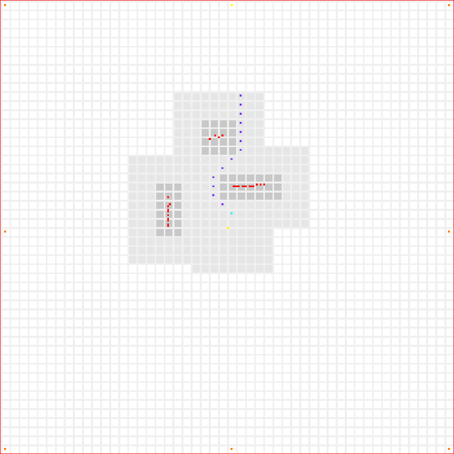
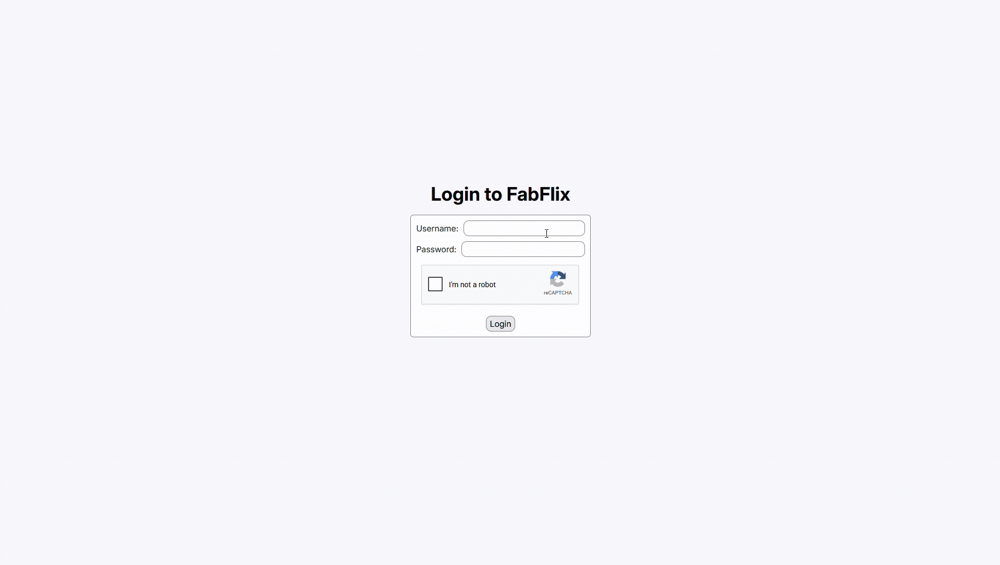
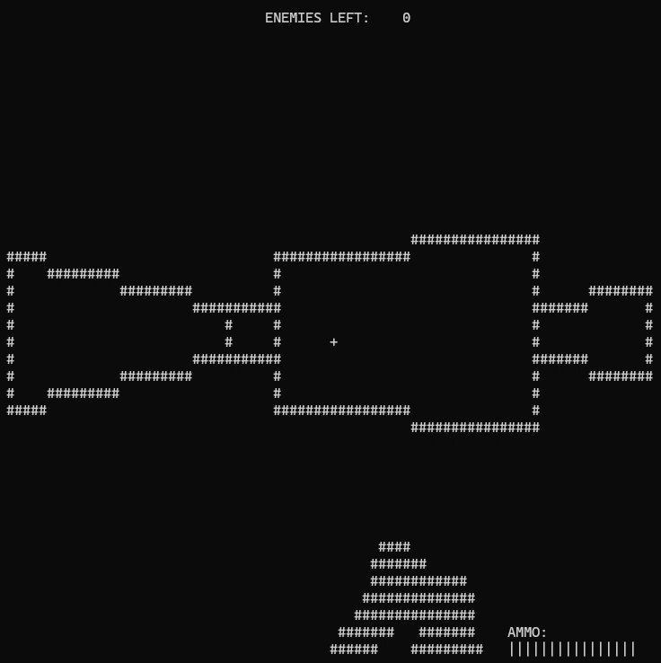

Some things I have made...

ESP32 SLAM Robot
Robot that uses a ToF sensor's 180° scans to perform simultaenous localization and mapping (SLAM), path planning around a map it creates dynamically to explore an indoor space. The SLAM algorithm is based on ICP matching, and the path planner uses A* on a coarse occupancy grid to step towards the head of a dynamic goal stack.
Github
Full Stack Movie Database
Full stack web app that simulates a large (~50k) database of movies. Built using Tomcat, Java, MySQL, MongoDB, JavaScript, Jquery, Ajax, and JDBC. Several (~20) medium features were implemented such as browsing filters and sorting, full-text search, autocomplete, cart checkout, secure login, and an administrative dashboard. Due to migration from MySQL to MongoDB, most features were implemented for both dbms.

Terminal DOOM Engine
First person 3D game based on DOOM (1993) that runs in the Windows terminal. Pipeline based on polygon transformation, implemented from scratch in C++ using no external graphics api. Occlusion is handled using a BSP tree to construct an efficient visibility order.
Github